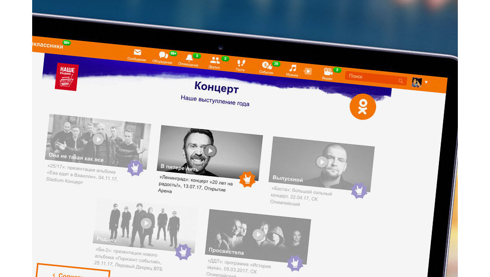

Как один игровой паттерн довёл до конца полмиллиона игроков - от Пушкинского музея до ЮНЭЙДС.
В декабре 2017 года перед социальной сетью Одноклассники встала задача создания универсального шаблона для игровых спецпроектов. Первыми к нам обратились представители «Нашего Радио» - нужно было запустить игровую интерактивную механику, которая помогла бы переосмыслить традиционную премию «Чартова дюжина».

В качестве типового решения во время мозгового штурма я предложил паттерн визард (пошаговый квиз) с высоким показателем дохождения до конца. Это позволило масштабировать решение в формате квиза на другие спецпроекты социальной сети и сделало пользовательский опыт бесшовным.
Совместно с креативной командой ОК в роли UX-райтера я запустил следующие спецпроекты в ленте социальной сети с суммарным охватом 79 миллионов пользователей:
Универсальная форма игровых спецпроектов, которая позволила довести суммарное число играющих в некоммерческие спецпроекты социальной сети до полумиллиона человек.